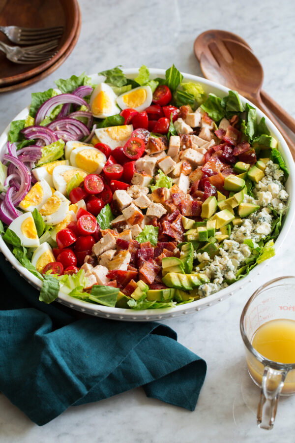

Cobb Salad

Description
Loaded to the max with bite size tender rotisserie chicken pieces, super
flavorful crispy bacon, vibrantly tasty red onion, rich eggs, creamy
avocado, bold blue cheese, and lightly sweet tomatoes.
Ingredients
Vinaigrette Dressing (or use
Ranch)
- 2/3 cup olive oil
- 2 Tbsp red wine vinegar
- 2 Tbsp lemon juice
- 2 tsp dijon mustard
- 1 tsp honey
- 1 tsp garlic
- 1/2 tsp each salt and freshly ground black pepper
Salad
- 8 slices bacon
- 4 large eggs
- 1 large head romaine lettuce, chopped into bite size pieces
- 2 1/2 cups cooked rotisserie chicken, chopped
- 1 1/2 cups grape tomatoes, halved
- 1/2 small red onion, thinly sliced (1/3 cup)
- 1 large avocado, diced
-
3 oz blue cheese crumbled, or 1 cup shredded cheddar cheese (we prefer
cheddar)
Steps
-
For the bacon: Preheat oven to 400 degrees. Line a rimmed 18 by 13-inch
baking sheet with aluminum foil.
-
Lay bacon strips in a single layer on the baking sheet. Bake in
preheated oven until crisp, about 12 - 20 minutes (bake time varies
based on thickness of bacon)
- Drain on paper towels, then chop.
-
For the eggs: Add 1-inch of water to a 4 quart pot or saucepan. Bring to
a boil over medium-high heat.
-
Add eggs, cover with lid and let cook 14 minutes. Transfer to a bowl of
ice water right away. Let rest 15 minutes, then peel eggs and chop.
-
Prepare salad: Layer lettuce into a large salad bowl or among five
serving plates. Top with bacon, eggs, tomatoes, onions, avocado and blue
cheese.
- Whisk dressing again then pour over salad and serve.
Notes
- Use a chilled dressing for a refreshing salad.
-
Rinse chopped lettuce leaves well then run through a salad spinner to
dry well so dressing sticks to lettuce.
-
Wait to add dressing until ready to serve so lettuce doesn't wilt.
-
Don't chop avocado until ready to serve as it will start to brown.
-
For less harsh red onion rinse after chopping under water and drain.
All credits go to
Cooking Classy.